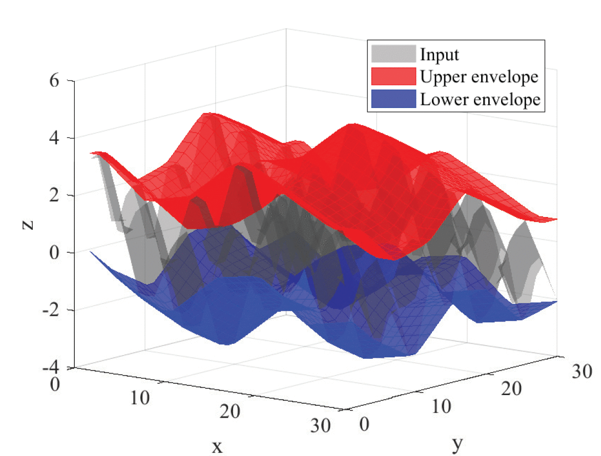

Welcome to FA-MVEMD!

Getting Started
Readme
Matlab Directories
FA-MVEMD\1D
FA-MVEMD\2D
FA-MVEMD\3D
Matlab Files found in these Directories
BIMF_subplot
EMD3D2V_parallel
driver_1d_example
redblue
EMD1D2V
EMD3D3V
driver_1dnv_example
redblue
EMD1D3V
EMD3D3V_parallel
driver_2d_example
EMD1DNV
EMD3D3V_parallel_var
driver_3d_example
EMD2D2V
MinimaMaxima3D
extrema
EMD2D3V
TIMF_plot
filter_size1D
Dependency Graph
View the
Graph
.
Copyright License
License
Generated on Thu 18-Apr-2019 12:21:59 by
m2html
© 2005